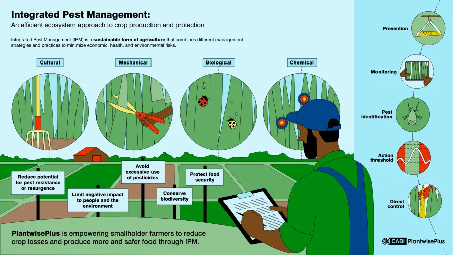
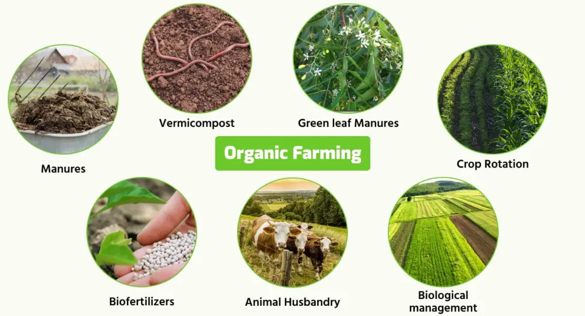
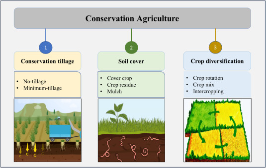
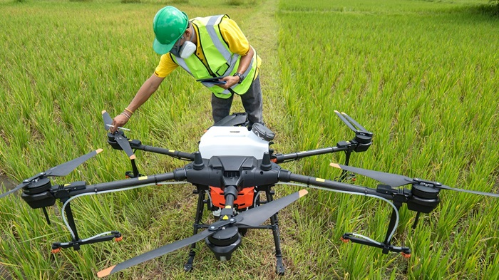

1.Integrated Pest Management (IPM):
Combine biological, cultural, and chemical methods to control pests, reducing reliance on harmful chemicals
2.Organic Farming:
Use natural fertilizers and pest control methods to reduce chemical inputs
3.Conservation Agriculture:
Implement practices like crop rotation, cover cropping, and reduced tillage to maintain soil health and biodiversity
4.Education and Training:
Educate farmers on sustainable practices and the proper use of agrochemicals to minimize environmental impact
others solution are given below to protect our ecosystem and biodiversity :
Policy Interventions:
Implement regulations to control the use of harmful agrochemicals and promote sustainable practices
Research and Development:
Invest in developing safer, more effective agrochemicals and alternative pest control methods
Avoid single use plastics and try to limit your consumption and unnecessary waste
Resist using products with harmful chemicals that are toxic to pollinators